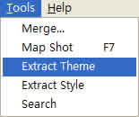
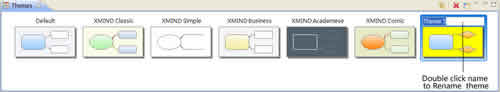
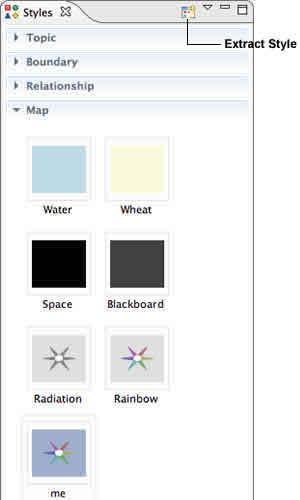

Theme
A theme in XMind is a collection of colors, shapes, line patterns, and other coordinated graphical attributes of a map. Xmind provides six professional designed themes for users to choose from, which can be applied to any map in just one easy step. Themes can be further customised and saved as a custom template for future use with other maps. Here's how:
To Change Theme
- Open Theme View.
- Double-click the theme you like.
- The current map's theme will be changed.
To Extract a Theme
- Design your own theme by choosing color, shape, line, background.
- Choose " Tools > Extract Theme..." on the menu.
 - Name this new theme in the "Theme View".
 - Now you can apply this theme to other maps.
Note:
- Eveny theme can only use one kind of topic style, boundary style.
Default Theme
Theme includes all attributes in XMind map, such as Background color, Wallpaper, Text font/color/size, line, and etc. XMind also offers six well-designed themes for you. If you like one of them, please just set it as "Default theme" with a simple click on the theme view toolbar.

If you are using XMind Pro, you can even design your own theme with some special attributes, and then set it as default theme. It requries a few simple steps:
- Chage the attribute of map, topic, bourdary, line and any other things in your map
- Extract your this well-designed theme: "Tools > Extract Theme"
- Now, you will see this theme in the theme view. You can also change its name via double-clicking the name.
- Click the star button on the theme view toolbar to set it as default theme.
Now, you can use your unique XMind.
Style
A Style in XMind is a group of attributes which can be extracted, saved, repeated applied to a map object. You can apply and create four kinds of object styles in the Style View: Topic, Boundary, Relationship, and Map. Here's how:
To Apply style to Map object(s):
- Select the object(s).
- Open Style View.
- Choose the style you want for that object type, and double click.
- Selected style will be applied to the object(s)

Note:
- The selected object can be a topic, boundary, relationship, or map.
- Each object can only have one style applied to it at a time
- You can select multiple objects and apply the same style to all of them.
To Create a personal style:
- Select a topic, boundary, relationship, or map.
- Format it with the attributes you want, such as:
- Topic: topic text, shape, and color.
- Boundary: boundary shape, color, transparency, line style, color, width.
- Relationship: relationship shape, line style, color, and text.
- Map: background color, multi-colored branches, and tapered lines.
- There are two ways to extract style:
- Open Style View and click "Extract Icon" on the view toolbar
- Choose "Tools > Extract Style" on the menu.
- Click on the default style name to rename the extracted style.
Notes: You can only extract one kind style at a time.
To Edit an existing style:
- Select the style.
- You can make the following changes:
- Rename: Click on the style name to rename it.
- Delete: Click the "Delete" icon on the Style View Toolbar or select "Delete" from the pulldown menu.